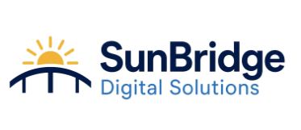
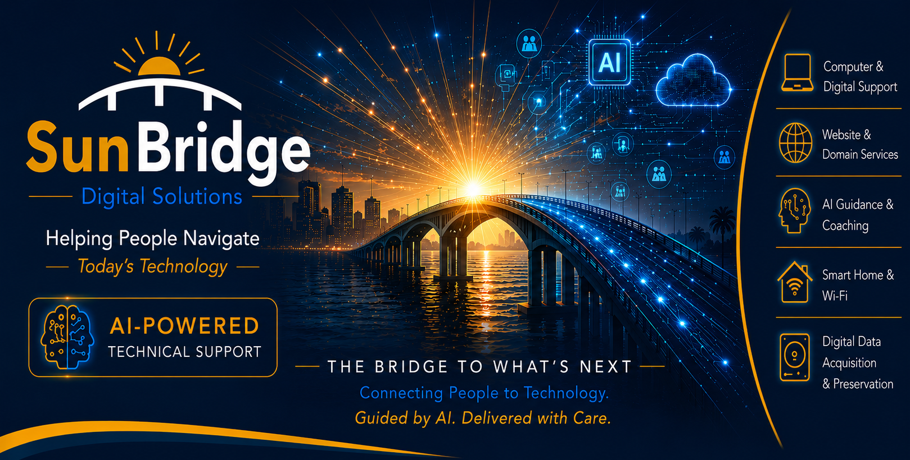
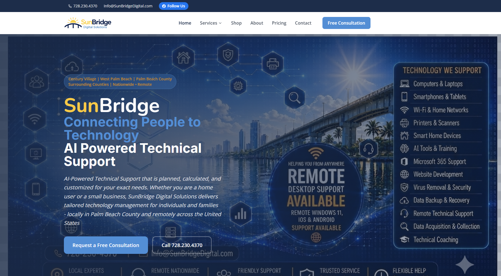
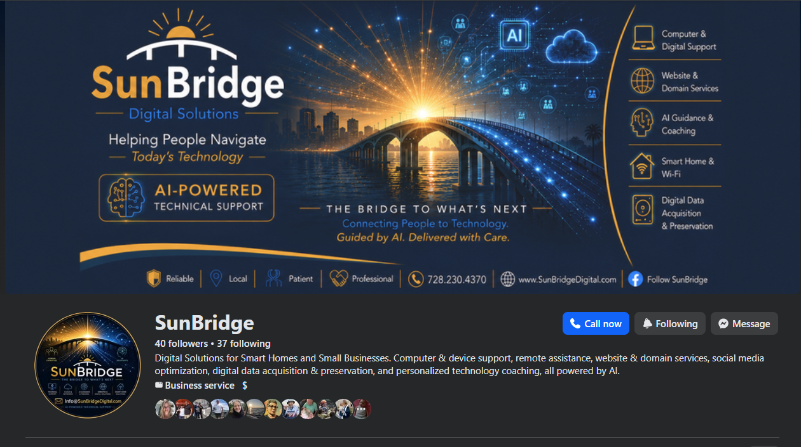

A personal technology-services brand and service offering.
BRANDED SERVICE OFFERING
TECHNOLOGY SUPPORT
LOCAL + REMOTE
SERVICE BRAND CASE STUDY
SunBridge
Digital Solutions
Approachable technology help, coaching, and digital support.
SunBridge is a branded service identity I created to package and present the technology help I can provide to individuals, retirees, families, and small businesses. It brings together hands-on support, coaching, practical AI guidance, AI workflow and custom software development, website and digital help, and collection-focused digital data services under one clear customer-facing name.
SunBridge is presented here as a personal branded service offering and portfolio project. It is not being represented as a large operating company.


Individuals, retirees, families, and small businesses.
Local support in Palm Beach County plus remote support when appropriate.
Service design, branding, customer communication, web presence, and practical technical delivery.
WHY SUNBRIDGE EXISTS
Make capable technology help easier to understand and easier to ask for.
People often know they need help, but they do not know whether the issue is a computer problem, an account problem, a setup problem, a training problem, or simply unfamiliar technology. SunBridge gives that help a clear service identity.
The brand is intentionally customer-friendly. The goal is to solve the immediate issue, explain what happened in plain language, and leave the customer more confident using the technology afterward.
WHAT I OFFER THROUGH SUNBRIDGE
Practical technology services under one recognizable brand.
Select a service area to see what it covers.
01 / COMPUTER & DIGITAL SUPPORT
Help with the technology people use every day.
Hands-on support for computers, laptops, smartphones, tablets, printers, software, accounts, security basics, setup, troubleshooting, and remote support.
Examples
Computers & laptops
Smartphones & tablets
Printers & scanners
Windows 11
Microsoft 365
Remote technical support
WHO IT IS FOR
Technology support that meets people where they are.
Device setup, troubleshooting, home technology, accounts, software, and help understanding what to do next.
Support for new devices, video calls, online accounts, security basics, applications, and everyday digital confidence.
Device setup, Microsoft 365 help, websites, domains, remote support, workflow coaching, and technology guidance.
LIVE BRAND PRESENCE
The service identity exists beyond a portfolio mockup.
The website and social presence show how the brand, services, visual identity, and customer-facing message are carried into real digital channels.
LIVE WEBSITEOpen site ↗

SunBridgeDigital.com
Customer-facing service presentation, service coverage, consultation path, technology-support positioning, and branded messaging.
SOCIAL PRESENCEFacebook

Integrated social branding
The same visual identity and service positioning extend into social media, creating a consistent place for people to discover the offering.
WHAT THIS PROJECT DEMONSTRATES
More than a logo and a list of services.
Turn technical capability into something a customer can recognize and understand.
Translate technical services into clear reasons someone would ask for help.
Build and organize a digital presence around service discovery and contact.
Carry the same brand language across web, social, and promotional materials.
Present a service model that can work locally and remotely depending on the customer's need.
Emphasize patience, clarity, professionalism, and understandable next steps.
CLEAR SERVICE BOUNDARIES
Digital data services are collection-focused.
Data can be collected from supported computers, devices, or digital media with an emphasis on organized handling and integrity.
The offering stays within a clearly defined collection-focused scope.
MY ROLE
I created the brand, service model, digital presence, and customer positioning.
SunBridge brings together several parts of my background: technical support, customer service, training, small-business operations, website development, generative AI, and digital-forensics acquisition experience. I created the service categories, customer messaging, brand direction, website presence, promotional materials, and the way the offering is packaged.
AVAILABLE THROUGH THIS PORTFOLIO
If someone finds Pflugel.com and needs practical technology help, SunBridge is the service identity I can use to help them.
The brand gives those services a clearer home, including lightweight custom software and AI workflow work, without making SunBridge the center of my professional identity. My primary portfolio remains Pflugel.com, while SunBridge provides a focused way to present and deliver customer technology services.
WHY IT BELONGS IN THIS PORTFOLIO
It shows how technical capability becomes a customer-facing service.
SunBridge demonstrates service design, web execution, branding, customer communication, practical AI positioning, and direct technology support. It complements the larger product and systems projects without replacing them as the primary story.